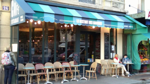

<style>
  @import url('https://fonts.googleapis.com/css2?family=Qahiri&display=swap');
</style>


<ion-content>
  <ion-header>
    <ion-toolbar>
      <ion-title class="titre ion-text-center">
        Un restaurant
      </ion-title>
    </ion-toolbar>
    <div class="ion-text-center poeme-contact">
      <h1>Restaurant des Gascons</h1>
    </div>


  </ion-header>
  

  <div class="ion-text-center poeme-contact">
    <ion-text>
      <h2>1 rue des artistes</h2>
    </ion-text>
    <ion-text>
      <li style="list-style-type:none;">Qu’il est chaud le soleil</li>
      <li style="list-style-type:none;">Quand nous sommes en vacances</li>
      <li style="list-style-type:none;">Y a d’la joie, des hirondelles</li>
      <li style="list-style-type:none;">C’est le sud de la France</li>
      <li style="list-style-type:none;">Papa bricole au garage</li>
      <li style="list-style-type:none;">Maman lit dans la chaise longue</li>
      <li style="list-style-type:none;">Dans ce joli paysage</li>
      <li style="list-style-type:none;">Moi, je me balade en tongs</li>
    </ion-text>
    <br>
    <ion-text>
      <li style="list-style-type:none;">Que du bonheur!</li>
      <li style="list-style-type:none;">Que du bonheur!</li>
    </ion-text>
  </div>


</ion-content>